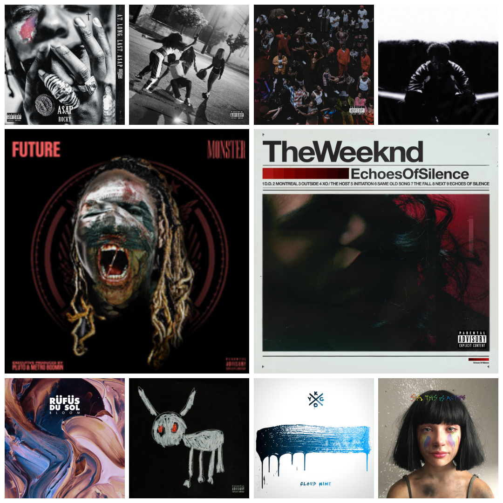
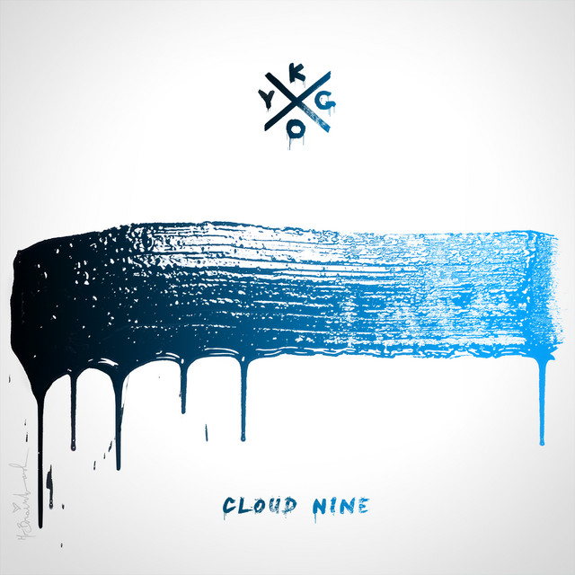
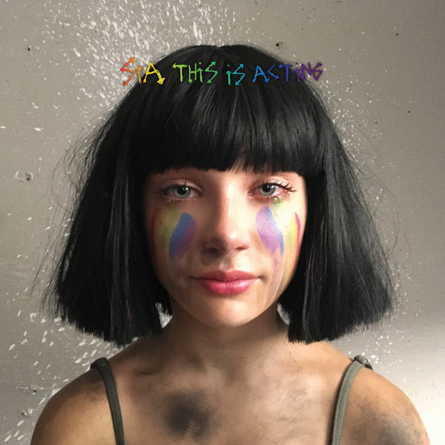
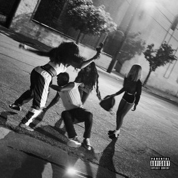
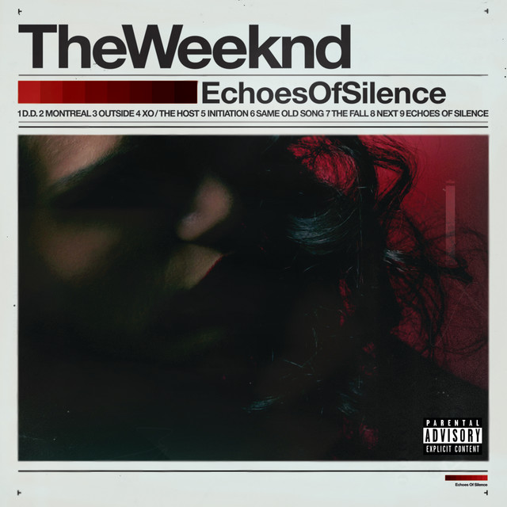
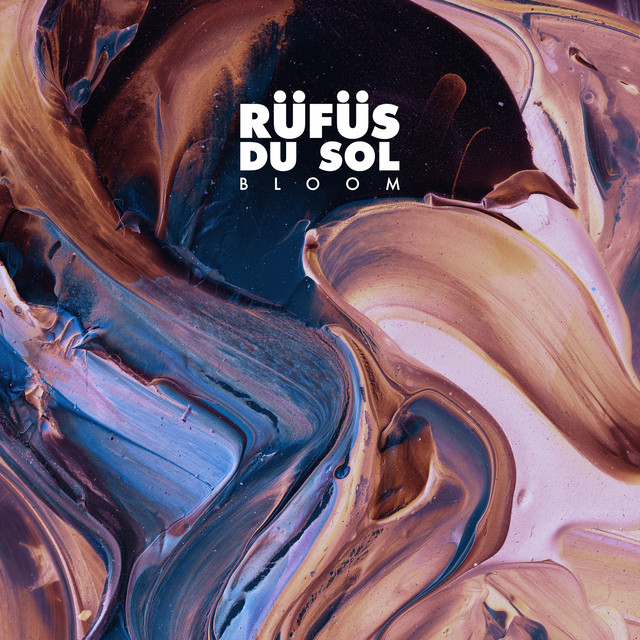
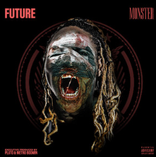
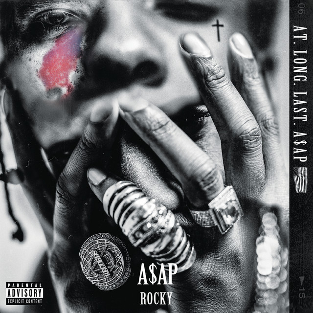

These 12 chosen songs truly stand out, setting themselves apart from the rest. I created this dedicated page to give these honorably mentioned singles the recognition they deserve, each and every one are incredible songs, offering them a fair chance to shine, especially for tracks that may have been overlooked or underappreciated on their respective albums.








Kygo & Labrinth - "Fragile"
Labrinth's voice stands out like a beacon throughout his entire discography, and it’s undeniable that he’s drawn some attention, drawing in a good looking 20.7 million monthly listeners. But on this track, it’s the production from Kygo that truly steals the spotlight. Coming from Kygo’s debut studio album Cloud Nine, the song "Fragile" is, without a doubt, one of the best collaborations Kygo has ever created.
The track grips you with its steady yet deliberate rhythm, unfolding with a low, subtle sound before Labrinth bursts in with a commanding, soulful chorus. What follows is a dynamic, hard-hitting anthem that takes you on a sonic journey. Heavenly, yet grounded, building layer upon layer of emotional intensity until the very last note. The song delves deep into the fragility of relationships, exploring how love can be both delicate and powerful, and with Kygo behind the beat, it’s destined to be a masterpiece.
Kygo and Labrinth are an incredibly underrated duo, and their chemistry begs for more collaborations. Released in 2016, "Fragile" has a staggering 202 million streams, yet I can’t help but feel that the true depth of Kygo’s music isn’t getting the recognition it deserves these days. 10/10 song for sure.
Drake & J. Cole - "First Person Shooter"
The song that sparked the infamous Drake & Kendrick beef is one that rarely gets the recognition it deserves, or perhaps it's simply a track that everyone’s forgotten about. But here’s the thing, Drake & J. Cole make such an incredible duo, and on this particular track, J. Cole completely dominates his first verse. You can feel his energy as he rips through it, especially when he casually mentions the "Big 3", a term he used to describe himself, Drake, and Kendrick Lamar. It’s a subtle yet powerful moment that sets the tone and where he never thought something huge would happen.
Then, right after J. Cole's final bar, the track undergoes a jaw-dropping transformation. What starts as a slow, laid-back rap tempo suddenly explodes into an absolutely insane beat switch. The production ramps up to a high-octane, fast-paced rhythm that’s nothing short of electrifying.
If you know me, you know I’m obsessed with beat switches, and this song delivers in a way that few others do. “First Person Shooter” is a song I almost slept on, judging it too quickly by its name, it’s naive yes. But when I gave it a deeper listen, I realised it's one of the best rap songs I’ve heard in years. It’s going to remain a staple in my top 10 for a long time. I give this track a 10/10.
Travis Scott & Young Thug - "SKITZO"
Travis Scott has an uncanny ability to make even the longest tracks feel like a seamless journey, and “SKITZO” is no exception. Sitting comfortably as the second-best song on UTOPIA, right behind “MELTDOWN”, this track deserves far more recognition than it gets.
Young Thug’s feature is a standout moment early on, blending perfectly with the first half of the song, though I can’t help but wish it was extended just a bit longer. From there, Travis takes full control, and the song only gets more captivating. With a runtime of over six minutes, I expected a beat switch, and Travis delivers something even more impressive. As the tempo slows and the atmosphere grows darker and more intense, the mood shifts effortlessly, showcasing Travis’s ability to pull listeners deeper into the experience. The bars flow effortlessly, the beat remains hypnotic, and the second half of the track is nothing short of flawless.
It’s amazing to see influencers across various platforms embracing the song, further proving my point: “SKITZO” is an easy 10/10. If Travis Scott’s upcoming album doesn’t feature at least one track like this, it’ll be a missed opportunity.
Sia - "Move Your Body" - Alan Walker Remix
I’ve never been an ardent fan of Alan Walker, but I’ve known Sia’s extraordinary talent since I was young, and I can confidently say that her voice is nothing short of iconic and distinctive. The original version of “Move Your Body” never quite hit the mark for me. However, when Alan Walker remixed it for the deluxe edition of This Is Acting, I was completely floored by how flawlessly the production came together.
I had no idea that Alan Walker could transform EDM into such a breathtaking experience. He subtly infused his signature style into the pop track, and the result was nothing short of tranquil. Sia’s powerful vocals effortlessly complement any EDM beat, and Walker’s remix amplifies that synergy to perfection. It’s honestly astonishing that this remix has amassed over 230 million streams, far outstripping the original in popularity. I never imagined a remix could outshine the original by such a margin.
This track definitely earns a solid 10/10 from me. If Alan Walker could team up with Sia, or another talented female vocalist, on more music like this, I’d be all in.
KAYTRANADA & Don Toliver - "Feel A Way"
KAYTRANADA’s latest album Timeless is undoubtedly a contender for the top 10 of 2024, and if I had to pick just one song that stands out as the absolute best, it would without question be “Feel A Way.” Don Toliver’s hauntingly smooth vocals paired with an ominous, late-night beat create one of the most mesmerising collaborations between a talented artist and an even more gifted producer.
The way the song carries an almost eerie stillness when it's dead quiet sends chills down your spine. The tempo remains steady throughout, perfectly aligning with both the lyrical depth of Don Toliver’s performance and the overall theme of the track. KAYTRANADA’s expertly crafted chords and instrumentation infuse the beat with a mystical energy that feels almost otherworldly. It’s the kind of song that transports you to a late-night stroll, whether on the terrace of a high-rise lighted up city building or walking down a quiet neighborhood road after a night out.
It’s spooky, it’s mysterious, and it’s absolutely captivating. “Feel A Way” is undeniably one of my top 10 songs of 2024, and no argument can change my mind.
JID - "Raydar"
I love this song, but I can’t help feeling a little surprised; only 52 million streams is wild. This track and the entire album The Forever Story deserved so much more. Without a doubt, JID dropped one of the best albums of 2022, proving once again that he knows how to craft a high-energy, hype-inducing masterpiece.
“Raydar” stands out right from the start with a unique beat that you don’t hear every day. Then, just when you think you’ve got a grip on the vibe, the beat flips, and JID comes in rapping like his life depends on it.
The production evolves constantly, layering in more instruments and energy until the final verse hits with another beat switch, bringing everything to a sudden, dramatic halt. JID consistently works with top-tier producers who complement his flow perfectly, and he never fails to deliver. With his next album on the horizon, I already know it’s going to be something special.
Baby Keem - "STATS"
The previously released mixtape DIE FOR MY B*TCH boasts a solid collection of tracks, some of which even outshine Baby Keem’s best work. Among them, “STATS” stands as a masterclass in beat-switching, showcasing Keem’s skill at crafting dynamic transitions.
The song’s two halves feature some of the most innovative production in his entire catalog. The first half blasts through fast-paced bars, only to be interrupted by a dramatic shift in the beat, seamlessly marked by an ad-lib. The second half introduces an eerie, almost unsettling background noise that almost reminds me of a UFO, yet oddly enough, only deepens the intrigue, pulling me in even further as the track progresses.
The overall production is an absolute hype machine, making it impossible not to feel energised. I genuinely believe this track is on the verge of going viral again, especially if more listeners continue to recognise it as the underrated 10/10 it truly is, and I wholeheartedly agree with that statement. If Baby Keem doesn’t incorporate a beat switch like this in his upcoming Child With Wolves, I’ll be seriously disappointed.
The Weeknd - "D.D."
Many people dismiss Echoes of Silence as the weakest mixtape in Trilogy, with House of Balloons and Thursday often stealing the spotlight. But I completely disagree with that sentiment. While it might not be The Weeknd’s absolute finest work, I can still agree with that, this mixtape features some of his most jaw-dropping production on certain tracks.
Take “D.D.,” for example, a track that I firmly believe stands as one of the greatest songs The Weeknd has ever created. It feels like it came straight out of trauma, with a sound that’s so ahead of its time it had me convinced it was a hidden gem from “Dawn FM” when I first heard it. His vocal delivery on those choruses is pure artistry, and the subtle instrumental layers in the background are the extra credit.
It's easy to see why so many of his earlier tracks get overlooked in favor of his more recent work, but it’s refreshing to see that people are finally giving these tracks the recognition they deserve. If you're diving into the depths of The Weeknd's older work, “D.D.” is a must-listen, as it’s a perfect example of his early brilliance. 10/10.
RÜFÜS DU SOL - "Innerbloom"
RÜFÜS DU SOL truly crafted an unforgettable experience with their album Bloom, but the track that undeniably stole the show for me was “Innerbloom.” This 9-minute masterpiece delivers some of the most introspective lyricism I’ve encountered in their entire career. Although, it’s the production that makes this track so captivating. It’s a masterclass in creating a soundscape that holds your attention throughout the entire song.
The singer’s delivery is also nothing short of breathtaking, adding an emotional depth that complements the music perfectly. “Innerbloom” feels like it unfolds in three distinct sections, creating a seamless journey that flows effortlessly while being produced beautifully. Especially those last verses when the synth comes in, absolute cinema.
It’s no surprise, considering this track was crafted by RÜFÜS DU SOL, a band renowned for producing some of the most abstract, versatile, and immersive beats in the industry. Honestly, RÜFÜS DU SOL is an act that deserves far more attention across their entire catalog. If you love the atmospheric, experimental vibe of someone like Tame Impala, imagine that energy but with a more cinematic and cohesive feel. This is a band that shouldn’t be overlooked.
Future - "Throw Away"
Choosing between “Throw Away” and “Codeine Crazy” as the best Future song of all time was a nearly impossible decision. While I lean slightly toward “Codeine Crazy” as the superior track, “Throw Away” remains an absolute 10/10 masterpiece, sadly getting lost in the mainstream shuffle of today’s music scene.
From the very beginning, the first half of the song draws you in with its hauntingly eerie chord progressions, setting a tone that feels like it could soundtrack a dark, atmospheric Halloween night. But then, at the halfway point, the track takes a completely unexpected and mesmerising turn. The beat shifts dramatically, led by a bizarre sound that almost feels like it’s playing in reverse. Completely surprising, yet captivating, a twist that you wouldn’t have seen coming from a song like this.
It’s a bold move that works, and honestly, I’m here for it. “Throw Away” feels like a song way ahead of its time and deserves way more recognition for its ingenuity. This track features some of the most inventive production I’ve ever heard from a trap legend like Future, cementing it as one of his finest moments, especially for a classic.
Future & Metro Boomin - "Young Metro"
A lot of people have shown love to the songs on We Don’t Trust You, and for good reason. To me, “Young Metro” is the standout by far. It doesn’t just hold its own; it outshines the majority of the album.
Future came in rapping like rent was due at midnight, delivering verses with an energy that felt raw and urgent. The Weeknd’s feature was honestly, kind of unexpected and slightly unnecessary. It kind of fit the vibe, but it added a quirky twist that made the track even more interesting.
Now, let’s talk about the beat. Metro Boomin absolutely lived up to his name on this one. The production is crisp, layered, and Future rides it with a flow that’s both surprising and refreshing. It’s not your typical Future & Metro collab, it’s got a unique flavor that sets it apart, and I’m honestly shocked more people aren’t talking about how special it is.
This track easily earns a spot on any good aux playlist, especially if your crew knows the lyrics. It brings something new to the table with Future experimenting a bit more than usual, and it pays off. For me, “Young Metro” isn’t just a highlight of the album, it’s one of those songs that’ll stay in rotation for a long time, just listen to it yourself.
A$AP Rocky - "L$D"
This is hands down my favorite A$AP Rocky song, and honestly, probably the best track on this entire list. A$AP Rocky is my personal favourite artist, and “L$D,” from his 2015 album AT.LONG.LAST.A$AP, is a perfect example of why I hold him in such high regard. This song is truly one of a kind. I could easily write an entire essay on how much I love it, but I’ll keep it in nutshell.
The vocal delivery on this track completely caught me off guard in the best way possible. At first, I couldn’t even believe it was Rocky. He sings the entire song, blurring the lines between rap and melody. His voice sounds amazing. It’s not what you’d expect from him, but that’s exactly what makes it so special.
Then there’s the production, so mesmerising. Psychedelic hip hop is easily my favorite subgenre based on my music taste, and the beat on “L$D” is straight-up dreamlike. It’s the kind of sound that gives you chills, especially when you’ve got the bass turned all the way up. If I ever got the chance to hear this live, it’d probably be a top-tier life experience.
There’s almost nothing wrong about this track. Maybe they could’ve toned down the swearing a bit, but honestly, it’s relatively minimal. If anything, I just wish the song were longer, maybe with a beat switch like Rocky’s known to pull off. Still, even as is, it stands tall as one of my all-time favourites in the genre. And with DON’T BE DUMB on the horizon, I’m very excited. If this album brings even a fraction of what “L$D” delivered, we might be witnessing a whole new chapter in A$AP Rocky’s career.